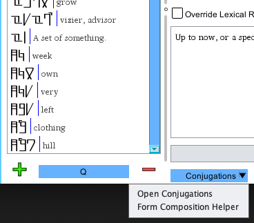
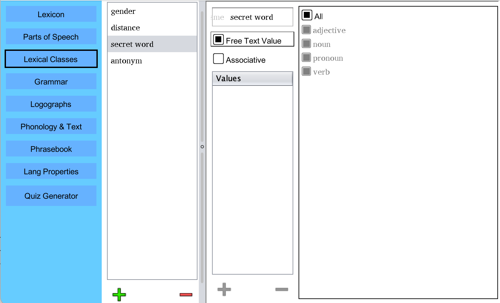
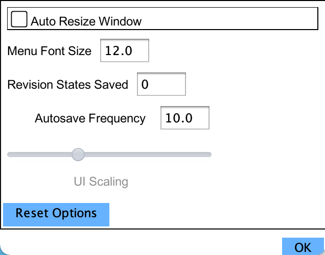
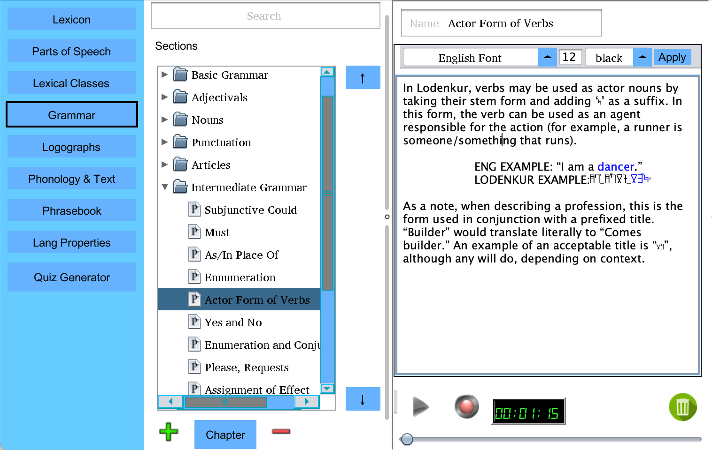
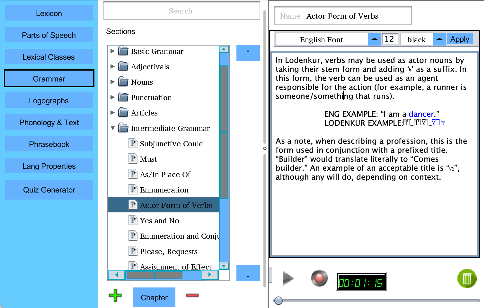

Version 3.5
WELCOME/OVERVIEW
Welcome to PolyGlot, an open source
tool set that helps to build constructed languages! PolyGlot
is a project that I have been working on for some time, and it
continues to become more stable and capable with each release. If you
have ideas, find bugs, or have any comments at all, please feel free to
email me at draquemail@gmail.com or
post them on PolyGlot's issues page!
WHAT’S NEW
Heyo, all! Welcome to version 3.5 of PolyGlot! This is a massive release! First, I want to give a huge shout out to TrapinchO over on GitHub, who gave an enormous amount of help with testing, and just has killer ideas in general! 3.5 includes a long list of upgrades and bug fixes. This also represents a significant step toward an Android release of PolyGlot, which has been much requested and a long time coming.
Among the most exciting upgrades are the complete integration of the Zompist word generator (algorithm and original design by Mark Rosenfelder there), a complete overhaul of how graphics are painted (no more CPU fans going nuts), a revamped lexicon look (local language synonyms now displayed in the list by their conword counterparts), automatic syllable composition when generating pronunciations, and many, many quality of life improvements (full list below). And that is on top of a ton of bug fixes!
Please enjoy, everyone!
- Full integration of the Zompist Word Generator
- Automatic syllable composition in pronunciation
- Word form constructor tool added for greater ease with agglutinative languages
- PolyGlot can now import local language fonts as with conlang fonts.
- Push updates to mass autodeclension rules updated
- Delete audio recording button added to grammar section
- Packer/unpacker feature added for advanced users
- Alphabetic Order feature reworked
- Open Ticket menu item added
- Regex now supported in language filter
- Relational word classes added to PolyGlot
- Phrase Book window added - compatible with print to PDF
- Lexicon now defaults to show both Conword and local word equivalent
- PDF Chapters can now be reordered
- Text fields and dropdowns upgraded to show labels more clearly
- PolyGlot update detection now based on more stable host
- Autosave feature added - every 5 minutes (can be changed in options)
- Deprecated conjugation rules now given more helpful names
- Dropdown menus with Conlang words now have hover text and the local word appearing next to them
- Check Language upgrade - checks for ambiguities in alphabet and for unsupported characters in lexicon
- PDF printing now accepts/uses local language font
- If present, romanized forms of words will export to Excel
- Tooltips now automatically format in a way that is much nicer to look at
- Font compatibility in PDF printing significantly improved
- Reworked printing of word class values to PDF
- Upgraded combobox displays
- Dropdowns now filter as you begin to type
- BIG update to core functionality to allow for development of Android app
- Upgraded to Java 17 - Long Term Home for PolyGlot (no more upgrdes for a good bit)
- New easter egg added. :3
BUGS FIXED:
- Ligatures loaded initially, but failed to re-load from saved PolyGlot archive
- Broken multi-delete in conjugations menu fixed
- Graphical artifacting and "shadows" appeared sometimes in etymology window
- Broken multi-delete in conjugations menu fixed
- Excel import bugs corrected (false success report)
- Quickentry image insertion caused PolyGlot to freeze
- Quiz could make copies of the correct answer (with copies being "wrong")
- Local languge sizing failed to function properly in menus
- IPA Conversion tool converted text with HTML interspersed
- If no alphabet is defined at all, "check language" feature crashes program
- Under certain circumstances, text boxes could be mistakenly set to the conlang font
- Search menu populates font and size options from wrong place
- Hitting the filter button while is already applied did nothing
- Deletion of top level etymological parent caused unhandled exception
- Excel export applied conjugation transforms without regard to rules
- Excel export did not properly set conlang font on conjugated wordform cells
- Excel export sometimes printed empty tabs
- Deleting an internal etymological parent resized elements of the etymology window
- If you had too many word classes, it would break the autodeclension setup menu
- Deleting an entry in the phonemic orthography menu would also delete any entries with the same values
- Elements of the conjugation menu were failing to render in the appropriate font
- The grammar chapter section could become persistently wonky if multiple chapters without names were added in a row
- Fixed menus that could display user text but which did not use local language font (possible tofu characters)
INSTALLATION
As of version 3.0, the installation of PolyGlot has become mostly automated. Simply
download the appropriate installer for your operating system (Windows: exe, Linux: deb, macOS:dmg) and open
to install! PolyGlot no longer has a frontend, and to run the base program, there is no need to install
Java at all (although for some features, a java runtime may be required).
Windows Note: Windows will complain bitterly about PolyGlot not being properly registered with Microsoft. It is safe to install, but registration costs money and PolyGlot is free.
macOS Note: On the initial run, you will have to right click th Application from Finder, select "open" and grant it permission to run, despite not being registered with Apple. It is safe to run, but registration costs money and PolyGlot is free.
Windows Note: Windows will complain bitterly about PolyGlot not being properly registered with Microsoft. It is safe to install, but registration costs money and PolyGlot is free.
macOS Note: On the initial run, you will have to right click th Application from Finder, select "open" and grant it permission to run, despite not being registered with Apple. It is safe to run, but registration costs money and PolyGlot is free.
BASIC FUNCTIONALITY
When you first open PolyGlot, you'll see the welcome screen with the
primary modules listed to the left as buttons. These modules contain the
most basic elements of language creation. Here, you can open an existing
PolyGlot library or simply click one of the modules and begin to edit a
blank language file.

Most of the windows can be optionally popped out to be worked on
independently. This can be very helpful when looking to use both the lexicon and
grammar guides together to translate a section of text. To do so, simply right click
on the a given module's menu button and click the "Pop Window Out" option.
If you click the Lexicon button, you'll see an empty dictionary. If
you
have an Excel sheet with a language that preexists, you can skip to
section 2, which goes over how to import them. Otherwise, keep reading
to see how to start your dictionary! Below is the screen you'll see
most often when editing your word list. I have loaded Lodenkur, my own
conlang, as an example.

Adding and removing words is done with the + and - buttons beneath the
word list on the left. On the right are all of the word properties.
Below is what the window looks like after creating a new word. Creating
parts of speech and classes of words (gender, for example) must be done
before assigning values to these fields. Both are covered elsewhere in
this document.

The current word is illegal, as the ConWord field is completely blank.
The reason for the illegality is displayed in the error box, with the
offending field highlighted in red. You can set other constraints to
word legality elsewhere, but the ConWord being more than a blank space
is one unalterable rule.
The NatLang field is where you put the natural language synonym(s), if any, for the word. The part of speech dropbox allows you to give a part of speech to the word.
The pronunciation field can be filled in manually, but it is more typical for users to define phonemic orthographies which will auto-populate this field. If you select the checkbox beneath the pronunciation field, pronunciation auto-generation will be overridden for the currently selected word, allowing words with exceptional pronunciations.
The Override Lexical Rules checkbox will tell PolyGlot that you wish to enter a word which breaks typical rules, and will unlock the lexicon list, even if the word would otherwise be illegal.
In the definition field, you can write a more freeform definition of your word. This is particularly useful for words that have no direct translation.
The Conjugations and Logographs buttons open windows to functionality that is described in full later in this document.
The NatLang field is where you put the natural language synonym(s), if any, for the word. The part of speech dropbox allows you to give a part of speech to the word.
The pronunciation field can be filled in manually, but it is more typical for users to define phonemic orthographies which will auto-populate this field. If you select the checkbox beneath the pronunciation field, pronunciation auto-generation will be overridden for the currently selected word, allowing words with exceptional pronunciations.
The Override Lexical Rules checkbox will tell PolyGlot that you wish to enter a word which breaks typical rules, and will unlock the lexicon list, even if the word would otherwise be illegal.
In the definition field, you can write a more freeform definition of your word. This is particularly useful for words that have no direct translation.
The Conjugations and Logographs buttons open windows to functionality that is described in full later in this document.

If you click the Search/Filter bar along the top of the Lexicon window,
a filter menu slides down (shown above). Here, you can filter words by any of their
main properties. The ConWord filter field will filter not only on words' base forms,
but also any declensions/conjugations of words. Fields are compatible with regex
expressions. Only word roots that have been used in the etymology engine will show up
in the drop-down. Once all filter criteria are entered, hit enter or click the Filter
button to apply it to the Lexicon. Most fields in the filter are regex compatible.
- Parts of Speech

In this module, you define your language's parts of
speech. . Every word you create in
PolyGlot may be assigned a type from the list that you define. Nouns, verbs,
adjectives and any other types of words your language uses should
be created here. Once created, they will populate in the drop down
boxes of the main screen. You can name the types and add notes as is
appropriate. Types can be added and deleted with the respective buttons
on the above screen.
It is worth noting that classes of words (such as gender) should not be created here. Their creation is handled elsewhere in PloyGlot and covered later in this document.
The name field allows you to give the type a name.
The notes field is useful for defining types that are nonstandard.
The pattern field allows you to restrict the forms that words of a given type may take via a regular expression. For example, the pattern ".*ru$" would tell PolyGlot that all words of a given type must end in the characters "ru". The pattern shown in the above illustration enforces the rule that verbs must end with the character for "lo" in Lodenkur.
The Conjugations/Declensions setup and the Conjugations/Declensions Auto-generation are advanced features covered in the next section of this guide.
The Pronunciation Mandatory checkbox tells PolyGlot to enforce pronunciations as mandatory for this type.
The Definition Mandatory checkbox tells PolyGlot to enforce definitions as mandatory for this type.
It is worth noting that classes of words (such as gender) should not be created here. Their creation is handled elsewhere in PloyGlot and covered later in this document.
The name field allows you to give the type a name.
The notes field is useful for defining types that are nonstandard.
The pattern field allows you to restrict the forms that words of a given type may take via a regular expression. For example, the pattern ".*ru$" would tell PolyGlot that all words of a given type must end in the characters "ru". The pattern shown in the above illustration enforces the rule that verbs must end with the character for "lo" in Lodenkur.
The Conjugations/Declensions setup and the Conjugations/Declensions Auto-generation are advanced features covered in the next section of this guide.
The Pronunciation Mandatory checkbox tells PolyGlot to enforce pronunciations as mandatory for this type.
The Definition Mandatory checkbox tells PolyGlot to enforce definitions as mandatory for this type.
IPA Conversion Tool
Occasionally it may be useful to convert entire paragraphs of text into an IPA
standard. The IPA Conversion Tool can be used to easily do this. Open the
tool by clicking Tools->IPA Conversion Tool.
Once you open the window, simply begin typing and you will see the phonetic translation
appear below.
Images in Text
PolyGlot supports images within text boxes, which can be very helpful
in communicating complex concepts or providing graphical examples. These images
are supported by the Publish to PDF functionality as well.

To insert an image, simply right click in the text field, and either browse for
the image, or simply copy/paste it in!

The image will appear in the text box and save in your language file.
Todo Menu

The To Do menu can be useful for remembering tasks that you would like to complete in your
language. To create a new To Do item, simply right click and enter a title. You can also right
click on existing To Do tasks and create subtasks! If all subtasks are completed, a parent
Conjugations/Declensions
Conjugations and declensions are one of
the more complex features of PolyGlot. They are used to store alternate
forms of words. Most commonly, verbs will be conjugated to show present
vs. past tense, but there are many different ways that a conjugation
can encode meaning in a language. It is in the cases of a more complex
system of conjugation/declension that the system in PolyGlot shines.

To edit the conjugations/declensions associated with a word type,
select the type and click the "Conjugations/Declensions Setup" button
on the
Types window. The example below is not of Lodenkur, but an arbitrary
language, to give a better idea of how to use regular expressions
(which Lodenkur lacks the correct character set to represent currently).
NOTE: Entire conjugations can be copy/pasted from one part of speech to another by right clicking on them or in the white space of the conjugation list, saving significant time in languages with complex and related conjugation setups.
NOTE: Entire conjugations can be copy/pasted from one part of speech to another by right clicking on them or in the white space of the conjugation list, saving significant time in languages with complex and related conjugation setups.

In the types window, I selected "verb," and clicked the
Conjugations/Declensions button. In the window that appeared, I used
the circled + button to add two declension headers. "Tense" and
"speaker Gender."

Using the indicated + button, I first create three dimensions for the Tense
header, then select "Certainty" and add two dimensions to it.
Note that "mandatory" is selected for the "past" dimension. This means
that all conjugations/declensions for words of the verb type that include the the past
dimension of the conjugation "tense" will be required on words of type verb.

Back on the Lexicon window, a word of type verb is selected. This is the type
that conjugations have been created for. From here, click on the
"Conword Declensions" button.
Here, every word form defined for a word's part of speech can be seen. If
auto-generation of the forms is defined, each space should be filled in with the
appropriately generated word form. To the top of the screen, the dimensions for
the columns and the rows may be selected (if there are two or more dimensions).
If there are three or more dimensions, the dimensions not chosen in either of the
dropdowns is represented by a tab that can be selected. Non-dimensional word forms
are displayed on their own tab, as are deprecated forms which had previously been
saved.
If you wish to override auto-generation rules for a word that is an exception, select
the Auto-gen Override check box to the lower left, and edit the existing values as
you see fit.

If you don't want to save any of the deprecated values,
they can be summarily deleted from all words that are a particular part
of speech at once. On the Conjugation setup page, click the "Clear Deprecated
Values" button to do this.

NON-DIMENSIONAL CONJUGATIONS
Some languages have non dimensional conjugations, such as gerunds. To create these, simply select the non-dimensional check-box as shown in the picture above.
Non-dimensional conjugations will be single forms, unattached to dimensional forms such as tense.
Some languages have non dimensional conjugations, such as gerunds. To create these, simply select the non-dimensional check-box as shown in the picture above.
Non-dimensional conjugations will be single forms, unattached to dimensional forms such as tense.
Auto-generation of Conjugations/Declensions
One of the more complex features to PolyGlot is the Auto-generation system for conjugations and declensions. This section goes through a basic setup to create a conjugation system. The dictionary used here as an example is included along with PolyGlot as the file exampleAutoGen.pgt. For those of you unfamiliar with regular expressions, links to excellent tutorials exist in the Additional Resources section of this document. Additionally, there are example dictionaries included with the download of PolyGlot (in the Example Lexicons folder) which may be helpful with some common patterns. For those of you who who are into infixes, examples are given on how to set this up!

Before auto-generation rules can be created, conjugations/declensions
for a type must exist (as explained in Conjugations/Declensions).
Once this is done, go to the Types tab, select the part of speech to
create auto-generation rules for, and click the Conj/Decl Auto-generation button.
Before continuing, consider how much complexity you will need for your word forms. Is conjugation a one step affair in your language?
Is it a simple swap of one pattern on the end or beginning of your words? If so, consider using the Simplified version of the
auto-generation tool, which can be switched to by clicking the radio button illustrated above (which exists on the top of the
auto-generation window).
Simplified Auto-Generation Setup
The Simplified Auto-Generation screen allows for fast and simple creation of basic auto-conjugation settings. If your language has
simple rules for the generation of word forms, you may find this tool less cumbersome than the classic view. The left side of the
window is taken up by a list of all conjugations. Only past and present exist in the example given. To the right are a few options.
First is the Disable Wordform checkbox. Selecting this tells PolyGlot to ignore this particular conjugation. This can be useful in cases where conjugations are created dimensionally in ways that you do not need. For example, perhaps both tense and certainty of actions are encoded in your language, but all actions in the past have positive certainty. In this case, you would select Disable Wordform for the conjugation past-uncertain.
Second is the Regex Pattern field. Regex (regular expressions) represent a powerful tool which can identify patterns. These are used in PolyGlot. Simple prefix/suffix cases are covered here, but if you would like to get more ambitious, please check out the links in Additional Resources. Here, the "$" character is placed in the regex field. This character represents the end of a word, so it will result in a suffix being added.
The last field is the Replacement Text field. Text placed here will replace any parts of the original word which match the regex pattern above. Here, the very end of the word (which does not include any characters) will be replaced with "-PASTO". Because the $ character only matches the end of a word itself rather than characters within it, it will add "-PASTO" as a suffix when conjugating the past tense.
The two buttons on the bottom are Prefix Template and Postfix Template. These will populate the regex field with a pattern telling PolyGlot to conjugate the currently selected conjugation/declension by either adding the replacement text to the beginning or the end of a base word, respectively.
First is the Disable Wordform checkbox. Selecting this tells PolyGlot to ignore this particular conjugation. This can be useful in cases where conjugations are created dimensionally in ways that you do not need. For example, perhaps both tense and certainty of actions are encoded in your language, but all actions in the past have positive certainty. In this case, you would select Disable Wordform for the conjugation past-uncertain.
Second is the Regex Pattern field. Regex (regular expressions) represent a powerful tool which can identify patterns. These are used in PolyGlot. Simple prefix/suffix cases are covered here, but if you would like to get more ambitious, please check out the links in Additional Resources. Here, the "$" character is placed in the regex field. This character represents the end of a word, so it will result in a suffix being added.
The last field is the Replacement Text field. Text placed here will replace any parts of the original word which match the regex pattern above. Here, the very end of the word (which does not include any characters) will be replaced with "-PASTO". Because the $ character only matches the end of a word itself rather than characters within it, it will add "-PASTO" as a suffix when conjugating the past tense.
The two buttons on the bottom are Prefix Template and Postfix Template. These will populate the regex field with a pattern telling PolyGlot to conjugate the currently selected conjugation/declension by either adding the replacement text to the beginning or the end of a base word, respectively.
Classic Auto-Generation Setup

The Classic Auto-Generation setup is significantly more complex than the simplified menu.
It is both more powerful and has a steeper learning curve. If your language has complex conjugation or
declension rules however, this will give you the power you need to implement it. If you are using the Classic
Auto-Generation, please also take note of the Test Menu. It will prove invaluable to making certain that your
rules behave in the manner which you expect them to.
A number of controls are presented here. In the leftmost column, you see every possible conjugation of the selected word type (verb in this example case). The verb selected to create a conjugation rule is past tense verbs that are certain and positive. Every possible combination of conjugations is present in this list. A combination can be disabled by clicking the "Disable Wordform" checkbox.
To create transformation rules click the + button beneath the rules column. In the example picture, one rule, "Past, Cert, Pos rule" has been created. The rightmost section of the window contains the rule's properties. Of note is that you may create as many rules as you like for each conjugation. They will be applied in the order that they appear in the rules list. Their order can be adjusted using the up and down arrow buttons immediately to the right of the Rules list.
The rule's name can be set to anything, and is just label to help remember what precisely it applies to. The rule regex immediately below its name dictates which words the rule applies to. In the example, I use the regex ".*" which applies to everything. If you used the match regex ".*ru$", the rule would only be applied to rules ending with "ru". Regex is a very powerful system, but can be confusing at first. There are links at the end of this document which lead to helpful guides with it if you are unfamiliar.
Beneath this is the Transformations table. Each rule may have as many transformations as you like. They will be applied as with the rules themselves, they are applied in the order which they appear. For conjugations with complex transformations, this can make things much simpler. Here, there is only one rule. As you can see, PolyGlot natively applies any script directly to the column to allow for natively legible characters (scripts must be imported as fonts, which is covered elsewhere in this document). The left column is the Regex value for the transformation. This is the section of the word that PolyGlot will target to replace. In my example it looks for the character "lo" in my script at the end of words. The right column contains the text that will replace the text targeted in the left column.
Here is the complete logic that this rule will result in when PolyGlot looks to create conjugations for verbs:
A number of controls are presented here. In the leftmost column, you see every possible conjugation of the selected word type (verb in this example case). The verb selected to create a conjugation rule is past tense verbs that are certain and positive. Every possible combination of conjugations is present in this list. A combination can be disabled by clicking the "Disable Wordform" checkbox.
To create transformation rules click the + button beneath the rules column. In the example picture, one rule, "Past, Cert, Pos rule" has been created. The rightmost section of the window contains the rule's properties. Of note is that you may create as many rules as you like for each conjugation. They will be applied in the order that they appear in the rules list. Their order can be adjusted using the up and down arrow buttons immediately to the right of the Rules list.
The rule's name can be set to anything, and is just label to help remember what precisely it applies to. The rule regex immediately below its name dictates which words the rule applies to. In the example, I use the regex ".*" which applies to everything. If you used the match regex ".*ru$", the rule would only be applied to rules ending with "ru". Regex is a very powerful system, but can be confusing at first. There are links at the end of this document which lead to helpful guides with it if you are unfamiliar.
Beneath this is the Transformations table. Each rule may have as many transformations as you like. They will be applied as with the rules themselves, they are applied in the order which they appear. For conjugations with complex transformations, this can make things much simpler. Here, there is only one rule. As you can see, PolyGlot natively applies any script directly to the column to allow for natively legible characters (scripts must be imported as fonts, which is covered elsewhere in this document). The left column is the Regex value for the transformation. This is the section of the word that PolyGlot will target to replace. In my example it looks for the character "lo" in my script at the end of words. The right column contains the text that will replace the text targeted in the left column.
Here is the complete logic that this rule will result in when PolyGlot looks to create conjugations for verbs:
- Is this word a verb? If so, continue.
- Create a Past Certain Positive conjugation field for the word
- Are rules available which the word matches the rule regex fits? If so, apply those rules to the word
- For each rule which applies to the word, apply each transformation in the order they appear
- For each transformation, target matching regex text and overwrite it with the replacement text
- The resulting text is your fully conjugated word-form.

By right clicking, rules can be copied and pasted from one conjugation form to another.
Multiple rules can be selected at once to copy or delete.
Once these steps are complete, I return to the Lexicon tab, create a verb, and
click the Conword Declensions button.

Here, all of the forms for the word "walk" have been automatically
generated. If you would like to turn off auto-generation for a particular word
which is a unique exception, click the Auto-gen
Override check box on the word's Conjugations/Declensions screen.

FILTERING CONJUGATION RULES BY CLASS
Often times it can be useful to filter conjugation rules by the value of a word's class. For example, perhaps female nouns decline differently than male nouns. If this is the case, defined class values (Classes covered in the next section) will appear in a filter box when creating rules. To apply a rule to words of all class values, simply choose "All." To apply it to specific class values, deselect all and select the values to filter for. NOTE: every value checked must match for the rule's transformations to be applied to a given word.
Often times it can be useful to filter conjugation rules by the value of a word's class. For example, perhaps female nouns decline differently than male nouns. If this is the case, defined class values (Classes covered in the next section) will appear in a filter box when creating rules. To apply a rule to words of all class values, simply choose "All." To apply it to specific class values, deselect all and select the values to filter for. NOTE: every value checked must match for the rule's transformations to be applied to a given word.
Auto-Generation Test Menu
The auto-generation test menu is an invaluable too when creating more complex conjugation and
declension rules. It provides both a test bed for the generation process and complex debug
output to show you exactly what is taking place when the new word forms are generated. To access
this menu, click the Test button in the upper right-hand corner of the Auto-Conjugation Setup
window.
In the example setup, there are two conjugations: past and present. Shown are rules for the past conjugation. Selected is the rule "male starts with b." The match class value is set to male, and the regex match is set to "b.*", so this rule will apply only to words of class male that start with the character 'b'. Within the rule are three transformation rules. First, appending "-PASTO" to the end of the word. Second, replacing the 'b' that the word begins with with "MALE-". Third, replacing the trailing 'O' character (added by the first transformation) with a '-'.
Clicking the Test button will allow us to test the entire past conjugation.
In the example setup, there are two conjugations: past and present. Shown are rules for the past conjugation. Selected is the rule "male starts with b." The match class value is set to male, and the regex match is set to "b.*", so this rule will apply only to words of class male that start with the character 'b'. Within the rule are three transformation rules. First, appending "-PASTO" to the end of the word. Second, replacing the 'b' that the word begins with with "MALE-". Third, replacing the trailing 'O' character (added by the first transformation) with a '-'.
Clicking the Test button will allow us to test the entire past conjugation.
In the example above, the test case "butt" was entered into the Test Conjugation/Declension window.
The word was set to "male" in the match by class value panel. This lets PolyGlot know to treat
your test word's gender class as male. When the -> Test -> button is clicked, your word will be
conjugated and placed in the text field to the right. We can see that the new word form has
been generated as "MALE-utt-PAST-".
Below this is the applied rules breakdown. This gives detailed information on each rule that was or was not applied. It will tell you why a rule was or was not applied. Additionally, it will walk through the application and results of every transformation, allowing you to see exactly how your final word form was generated.
Below this is the applied rules breakdown. This gives detailed information on each rule that was or was not applied. It will tell you why a rule was or was not applied. Additionally, it will walk through the application and results of every transformation, allowing you to see exactly how your final word form was generated.
Advanced Rule Manipulation
Some languages have significant complexity involved with their conjugation and declension. To help manage
these more easily, right click on a rule (or selection of rules) to bring up the advanced rule manipulation
menu.
Copy and Paste work as you would expect, allowing you to copy one or more rules and paste them into another
conjugation. Simply right click in the second conjugation's rule field and click paste to insert them. Bulk
Delete Rule will delete all matching rules in your entire conlang. Bulk Update Rule will use the currently
selected rule as a template and force all other rules within the conlang to exactly match it.
Under Push To Dimension, you will find a list of all conjugations with one or more matching dimensions to
the one currently selected. Clicking on one will copy the currently selected rule to all conjugated forms
which include this dimension.
Under Delete From Dimension, you will find a list of all conjugations with one or more matching dimensions to
the one currently selected. Clicking on one will delete rules matching the one currently selected from all
conjugated forms which include this dimension.
Word Form Composition Helper

When translating texts into your language, it can be cumbersome to open the conjugation table for each individual
word that you need to find a form for. To help with this, PolyGlot includes the Form Composition Helper, which can
be accessed by clicking the dropdown arrow on the Conjugations buttons below the definition of a word, then
clicking Form Composition Helper.
For agglutinative languages in particular, this can be very helpful (example of agglutinative language setup
available under help menu).
Using the drop down menus, the word can be composed into any given form. The window does not need to be closed
as you navigate the lexicon. It will update as new words are chosen for ease of use.
Word Classes
Word class is most familiar as grammatical gender. Classes can be added to words by
clicking the Lexical Classes button on the main menu. This functionality replaces the
hard coded Gender module in prior versions. As many classes as you like, with as many
values as you find necessary may be added to words. If your language used gender, it will
automatically be converted to a word class, and you will notice no difference in your
language.

In this example, I have added two classes, gender and distance. To the distance class,
I have added three values: touching, near, and far. To the right, all of the parts
of speech for this language are listed. Only nouns are checked, so the distance class will
only be applied to nouns.
Next, I create another class called "secret word." I'm making a language here
where some words can have secret meanings that only some people know. I need an extra text field
to store this value in. Notice in the picture above, that the Free Text Field value is selected
for the secret word class.
Last, I create a class called "antonym" and select the Associative checkbox. This
creates a dropdown which is populated with all other words in your lexicon, allowing you to
directly associate a word with its paired antonym (or whatever other associative feature your
language might have).

If I create a verb in the Lexicon now, we will see the relevant classes
appear in the word's properties. The "distance" class does not appear, as that class was set
to apply only to nouns. Gender has been set to male, its antonym has been selected from a list of all
other words, and its "secret word" value is set to arbitrary text.
Word Quickentry
The Word Quickentry window allows users
to very quickly add words to their dictionaries. It is designed to be
used entirely with the keyboard without any need to use the mouse until
all entries are complete. To open the quickentry window, click the
Q button on the Lexicon between the + and - buttons.

Here we see the quickentry screen. All of the basic word properties can
be seen here. The Con Word field is highlighted red, as it is a
required field. If you have your language set to require Local Word or
Type, those fields will be highlighted as well. Each of the fields can
be navigated via the Tab key.
Once all the fields have been completed to your liking, hitting the Enter/Return key will save the word
to your dictionary, blank the fields, and reselect the first field to
begin the process again.

Not all languages will use every field. If your language does not use
one of the fields, you can un-check the field's active box to disable
it. In the example above, the Pronunciation
has been disabled. This means that the Tab key will skip selecting it, and
speed up your entries.
Once you are done, simply close the window or hit the Done button.
As a note, the quickentry window will enforce rules that the user has set. It will not allow a word that lacks a type if types are set to mandatory. It will not allow a duplicate Con Word is mandatory uniqueness is set.
Once you are done, simply close the window or hit the Done button.
As a note, the quickentry window will enforce rules that the user has set. It will not allow a word that lacks a type if types are set to mandatory. It will not allow a duplicate Con Word is mandatory uniqueness is set.
Saving/Opening/New

Saving, opening, and creating of new dictionaries can be handled
through the File menu. Appropriate key combinations will also achieve
these tasks from anywhere in the program. Recently opened files are
listed here as well.
Phrasebook
The Phrasebook window can be found in the buttons on the left side of PoolyGlot's
main screen. This is a useful tool for organizing common phrases in a language.
Full fluency is desirable, but quick access to "Where is the bathroom?" or "Why
am being arrested?" can be useful!
The phrasebook works in a similar fashion to most other menus in PolyGlot. To the left is a list of existing phrases. Phrases can be added and deleted via the + and - buttons below this list. They can be reordered using the arrow buttons to its right. The first text field on the right is the phrase's gloss. This is what will appear in the list as its label. Then there is the local language version of the phrase, its conlang translation, a transcription of its pronunciation, and relevant notes.
The pronunciation will be automatically generated if you have this feature set up in the Phonology & Text section of your language. It may also be overridden if the phrase contains words with pronunciation rule exceptions.
When printing to PDF, phrases may be included if the option is checked.
The phrasebook works in a similar fashion to most other menus in PolyGlot. To the left is a list of existing phrases. Phrases can be added and deleted via the + and - buttons below this list. They can be reordered using the arrow buttons to its right. The first text field on the right is the phrase's gloss. This is what will appear in the list as its label. Then there is the local language version of the phrase, its conlang translation, a transcription of its pronunciation, and relevant notes.
The pronunciation will be automatically generated if you have this feature set up in the Phonology & Text section of your language. It may also be overridden if the phrase contains words with pronunciation rule exceptions.
When printing to PDF, phrases may be included if the option is checked.
Language Properties
This screen allows various properties of the ConLang to be modified.
Below are explanations for each.
-Language Name
The name of your constructed language.
- Local Language
The natural language that you are using while writing your dictionary/language rules.
- Author/Copyright Info
Here you can include any information that you the creator want packaged with your language, including personal contact information, copyright information, etc.
- Conlang/Local Fonts
Many ConLangs use nonstandard character sets, and it is sometimes easiest to simply create a font yourself and map these characters to standard Unicode characters. To load a font, click the Conlang Font button and select the file of your desired font. All Conlang fields will appear in the appropriate font.
NOTE: In the past, PolyGlot supported OS font selection. This can still be accessed by selecting the dropdown menu and clicking through the warning. Be advised that this functionality is no longer fully supported, and may lead to ligatures not being rendered properly.
NOTE: The Noto Fonts sets from Google are an excellent resource if you are looking for interesting collections of well designed characters. They can be downloaded for free here.
- Alphabetical Order
This allows you to create a custom alphabetical order for the characters used in your language. Simply add characters to the list on the left of the Properties screen in the order which you wish. Letters may be reordered using the arrows to the side of the list. Letters may be represented by multiple characters, but be wary of ambiguity you may create in ordering if you use this (for example, if "a", "ab", abd "b" are all separate letters, ordering may be inconsistent). If your alphabet does not include all of the characters appearing in your lexicon, it will be highlighted in red, and Polyglot will be unable to use your alphabetic ordering.
- Kerning
The default value for kerning is set to 0. Making this larger or smaller (into negatives) allows you to edit space between characters.
WARNING: Kerning values over 0.0 will cause PolyGlot to ignore ligatures. This is due to a problem with Java rendering that will not likely be fixed. If you are using a custom font, adjust spacing there.
-Language Name
The name of your constructed language.
- Local Language
The natural language that you are using while writing your dictionary/language rules.
- Author/Copyright Info
Here you can include any information that you the creator want packaged with your language, including personal contact information, copyright information, etc.
- Conlang/Local Fonts
Many ConLangs use nonstandard character sets, and it is sometimes easiest to simply create a font yourself and map these characters to standard Unicode characters. To load a font, click the Conlang Font button and select the file of your desired font. All Conlang fields will appear in the appropriate font.
NOTE: In the past, PolyGlot supported OS font selection. This can still be accessed by selecting the dropdown menu and clicking through the warning. Be advised that this functionality is no longer fully supported, and may lead to ligatures not being rendered properly.
NOTE: The Noto Fonts sets from Google are an excellent resource if you are looking for interesting collections of well designed characters. They can be downloaded for free here.
- Alphabetical Order
This allows you to create a custom alphabetical order for the characters used in your language. Simply add characters to the list on the left of the Properties screen in the order which you wish. Letters may be reordered using the arrows to the side of the list. Letters may be represented by multiple characters, but be wary of ambiguity you may create in ordering if you use this (for example, if "a", "ab", abd "b" are all separate letters, ordering may be inconsistent). If your alphabet does not include all of the characters appearing in your lexicon, it will be highlighted in red, and Polyglot will be unable to use your alphabetic ordering.
- Kerning
The default value for kerning is set to 0. Making this larger or smaller (into negatives) allows you to edit space between characters.
WARNING: Kerning values over 0.0 will cause PolyGlot to ignore ligatures. This is due to a problem with Java rendering that will not likely be fixed. If you are using a custom font, adjust spacing there.

The last element of the Properties tab is the language check box settings. Here, you can tell PolyGlot to enforce rules within your lexicon.
- If Part of Speech Mandatory is selected, all words must have a part of speech set to be saved.
- If Word Uniqueness is set, homonyms within your conlang will be forbidden.
- To disable regex functionality in the pronunciations (thereby allowing ignore case to apply to them as well), click the Disable Orthographic Regex option.
- If Local Mandatory is set, all words must have a Local Word property set to be saved.
- To organize your lexicon by local word synonyms, select the Local Word Lex Display option.
- If Local Uniqueness is set, no two constructed words may contain identical text for their Local Word property.
- The Ignore Case check box will make all features (excepting the pronunciation options) ignore upper vs. lower case characters in your dictionary.
- If your language uses Right to Left style writing, select the Enforce RTL checkbox. This will make instances of your conlang appear/be written in the correct direction through the program.
- If you check the Override Regex Font box, all fields which can accept regex values will use the local language font, allowing you to create more complex regex values without worrying about how particular symbols are displayed on your screen.
- Expanded Lexicon List Text controls whether local/conlang synonyms are displayed next to their counterparts in menus. On by default.
Family Window

NOTE: The Lexical Families window is currently being
revamped. In future versions it will likely be replaced entirely. This
section of the manual is unedited from the last version.
The Lexical Family window is primarily a lexical organization tool, but can be helpful in many ways. To access the window, click Lexical Families within the Tools menu.
The Lexical Family window is primarily a lexical organization tool, but can be helpful in many ways. To access the window, click Lexical Families within the Tools menu.

The Families window gives a hierarchical tree view on the left, with a
name, a list of words in a family, and notes associated with the
family. This tool is particularly useful for keeping track of groupings
of words that derive from one another, or that are in some way
connected, whether through connotation, denotation, or any
other family related information. The nature of a the relationship can be recorded easily in
the Notes field.

In this example, I have created two entries in the thesaurus node
("body" and "death") which represent families of words within Lodenkur.
I have done this by clicking the + button in the lower left-hand corner
of the window and changing the names of the families on the right once
selected. After this, the newly created "body" node was selected on the
left. Words have been added to the list of family words. This has been
done by selecting words in the main window's lexicon, and clicking the
circled + button on the right. Multiple instances of the same word
cannot be added to the same family.
The words added here are for a living body and an inanimate body. They are both logically and lexically related, so I have grouped them together.
The words added here are for a living body and an inanimate body. They are both logically and lexically related, so I have grouped them together.

Here, I have created a subfamily, "limbs." This was done by selecting
the "body" family, then clicking the + button in the lower left-hand
corner. To this family, the words for "arm" and "leg" have been added
because they are lexically related to one another. The word for "hand"
has been added because it is logically related.

There are times when it is useful to see all words in a family,
including those that are in all subfamilies. To do this, click the
"include subfamilies" check box. In the example, all words from within
the "body" and the "limbs" families are included. As a note, words
cannot be deleted from the "Words in family" list while this box is
checked.

Of note is that when a word is selected in the Families Window, it
will be auto-selected in the dictionary lexicon. This can be useful for
vocabularies that have not been wholly committed to memory.
Using the Check Language Tool
The Check Lexicon tool allows you to easily check over your lexicon
to see if you have mistakenly left entries which break patterns you have established
for your language. It can check for the following cases:
- Words missing Part of Speech (if set mandatory in Language Properties)
- Non-Unique words (if set illegal in Language Properties)
- Coverage of characters used in the script alphabet section
- Proper generation of pronunciation (if set up)
- Proper generation of Romanized word form (if set up)
- Completion of definition (if required by part of speech)
- Completion of pronunciation (if required by part of speech)
- Word matches pattern associated with given part of speech
- Regex patterns used within your language file will be checked for validity
Importing Swadesh Lists
The Swadesh List tool can be helpful when beginning a language and looking for a place to start. Swadesh lists are lists
of the most fundamental words in many early languages. If these are completed, deriving newer words and expanding your
language may prove to be much easier. PolyGlot comes with a few predefined Swadesh lists. Selecting Tools->Swadesh Lists
and selecting either Original or Modern will automatically copy a series of words to your lexicon which are empty, save
for their local language fields being filled in with the English values.
Additionally, you may choose to load a custom Swadesh list. If this option is selected, an open file dialog will appear. Simply select any line delimited plain-text or Unicode text file to import. (Note: Comma delimited will not work correctly, these files must be delimited by a new line or carriage return between each word to be imported).
Additionally, you may choose to load a custom Swadesh list. If this option is selected, an open file dialog will appear. Simply select any line delimited plain-text or Unicode text file to import. (Note: Comma delimited will not work correctly, these files must be delimited by a new line or carriage return between each word to be imported).
Zompist Word Generator
The Zompist generator section of PolyGlot is an adaptation of the tool originally written by Mark Rosenfelder.
This section of the manual is largely an modification of his original instructions. Additional functionality has
been added, but the core logic and algorithm has not been changed.
Above is the top half of the word generator window. This is where the controls live.
When this menu first opens, you'll see default settings in place. Simply click the Generate Values button and 150
new words will be generated for you in the output list below. If you would like to see an example of what text
written in the patterns generated above, just click the Sample Text button With the default settings, you’ll get a
pseudo-text, like this:
F=tvszšž
That means that any time gen wants to output an F from the syllables list, it will randomly pick one of f, v, s, z, š, ž. The phonemes in a category have to be single characters, but we’ll see how to output digraphs below.
Order here determines the probability. The program runs through the phonemes in a category, with the default Medium setting giving 30% chance of stopping after each subsequent character. The example F definition above is set up for t to occur a frequently and ž not that very infrequently.
The main corollary: Put the sounds you like first! Don’t list them in place of articulation order unless you really like labials. Try varying the order and hitting Generate to see how changing the order changes the output.
Don’t overdo the classes. This tool doesn’t know any phonology, and will be perfectly happy with a single class C for all consonants. You define a class for two reasons:
1) To control probabilities. E.g. we usually want stops to occur more than fricatives.
2) To enforce phonotactics. E.g. if the only initial clusters you allow are stop + liquid, then you need classes for stops and liquids.
θ|th
That tells the tool to replace every occurrence of θ in the output with th. You can also handle combinations. E.g. maybe ti always changes to či. You'd write that as
ti|či
The rewrite rules are regex compatible. For example you could change both br and bl to bj with the formula
b[rl]|bj
Rules are applied in order. Take care that one intended rewrite will not simply be consumed by a later one.
Output settings: You can choose either to generate words based on the rules you define or all possible syllables. Generating words will give you a randomized list of constructed words (they will not be the same if generated twice). If you generate all syllables, every possible combination of characters will be generated. This process is not random, as it hits each possibility once. The syllables can be imported to allow automated pronunciation generation to separate syllables automatically.
Show Syllables: Selecting this will separate the syllables of each word by division dots. This option is available only for word generation.
Dropoff: Under the categories definitions, characters appearing later will appear less frequently. Dropoff determines quickly this declines. If you have C=ptkbdg, then when outputing a C, normally p will appear most frequently, t a but less, and so on, with g appearing the lease. If fast dropoff is selected, the probabilities will stack even more in favor of the first character (p here). With slow selected, a more even distribution will be applied. Sliding it entirely to the side will make all choices equiprobable.This option is available only for word generation.
Slow Syllable Dropoff: The Dropoff control doesn't affect the selection of syllable types. You can choose a more even distribution by checking this. This option is available only for word generation.
Monosyllables: This slider controls how much of the output should be monosyllabic. This might be set to Always for an isolating language, for instance. This option is available only for word generation.
Target: This controls the target number of words to generate. This option is available only for word generation.
A gatri tu te ee kope. Eudrotri pli ki itupe ki ii. Obudrotia peke pi tea pi pi? Atoi pi ka iekribe eupi ape? Kle dru iplo ki gipotu i. Pi ke brikaibe ble do brou. Ta glikipro e teakatre piu u. Be kipe pa pa pi tepipliita. Tikiii topu epatripu i o po? Pe uuta dru opi gii ki. Ti pepate bi bi a e? I gia kitidu eproplu ple kitle. Kii pitre ko e iipoga a. E o popate ku kritra pi. Tu pe titepee dro kee ekiplu. Ti ti ki te gra a. Ia tle biitapo oi pri epoi? Ti opikli be po betle e. Igribliia tipi tloka ple ko plubla. Ge pita tidleki to pri ti. Ategoki e a plu topipi kiipe. Priklu kro ai tepeplea pu e. A tapa kite pubo ti du. Bipro begitebi kaaete gi tipo ko. E kipretopua pika glotro di bu. Pepe tebo iikepoplo i tru gi. Gike da e ipia tripi ia. Bi bikli pate dlite e dligu? I pididi kra pabaka e o. Ipoidipi a ti i ba geka!
Categories
These are your phonological classes, defined by enumeration. For instance, I might define my fricatives like this:F=tvszšž
That means that any time gen wants to output an F from the syllables list, it will randomly pick one of f, v, s, z, š, ž. The phonemes in a category have to be single characters, but we’ll see how to output digraphs below.
Order here determines the probability. The program runs through the phonemes in a category, with the default Medium setting giving 30% chance of stopping after each subsequent character. The example F definition above is set up for t to occur a frequently and ž not that very infrequently.
The main corollary: Put the sounds you like first! Don’t list them in place of articulation order unless you really like labials. Try varying the order and hitting Generate to see how changing the order changes the output.
Don’t overdo the classes. This tool doesn’t know any phonology, and will be perfectly happy with a single class C for all consonants. You define a class for two reasons:
1) To control probabilities. E.g. we usually want stops to occur more than fricatives.
2) To enforce phonotactics. E.g. if the only initial clusters you allow are stop + liquid, then you need classes for stops and liquids.
Illegal Clusters
Within the illegal clusters box, you can define clusters of characters which are illegal. The generator will not create any words or syllables which contain these character combinations. These rules are applied after the rewrite rules are applied.Rewrite Rules
This is optional functionality which can add be used to add multicharacter patterns to the output, transform special cases of clusters into a single, unified character, etc. by applying global substitutions to the output. The simplest form is to replace a single character:θ|th
That tells the tool to replace every occurrence of θ in the output with th. You can also handle combinations. E.g. maybe ti always changes to či. You'd write that as
ti|či
The rewrite rules are regex compatible. For example you could change both br and bl to bj with the formula
b[rl]|bj
Rules are applied in order. Take care that one intended rewrite will not simply be consumed by a later one.
Output settings: You can choose either to generate words based on the rules you define or all possible syllables. Generating words will give you a randomized list of constructed words (they will not be the same if generated twice). If you generate all syllables, every possible combination of characters will be generated. This process is not random, as it hits each possibility once. The syllables can be imported to allow automated pronunciation generation to separate syllables automatically.
Show Syllables: Selecting this will separate the syllables of each word by division dots. This option is available only for word generation.
Dropoff: Under the categories definitions, characters appearing later will appear less frequently. Dropoff determines quickly this declines. If you have C=ptkbdg, then when outputing a C, normally p will appear most frequently, t a but less, and so on, with g appearing the lease. If fast dropoff is selected, the probabilities will stack even more in favor of the first character (p here). With slow selected, a more even distribution will be applied. Sliding it entirely to the side will make all choices equiprobable.This option is available only for word generation.
Slow Syllable Dropoff: The Dropoff control doesn't affect the selection of syllable types. You can choose a more even distribution by checking this. This option is available only for word generation.
Monosyllables: This slider controls how much of the output should be monosyllabic. This might be set to Always for an isolating language, for instance. This option is available only for word generation.
Target: This controls the target number of words to generate. This option is available only for word generation.
This is the bottom half of the word generator after a set of words has been generated. This is the section of the tool used to
import words into your language. Rather than simply copying words wholesale, I recommend that you take the time to sort through
them, finding those whose sounds and feel you like, then pairing them with an appropriate meaning.
Generated Words: This is where all generated words are placed. You may select and edit them as you like. Using the + and - keys below, you may delete lines or add in new ones if the idea for a similar sounding word to one you are keeping comes to you.
Swadesh List: This is an optional feature which helps to pair generated words with very basic definitions. There are two default Swadesh lists that can be selected in addition to the option of loading your own, custom list (if you choose to load your own, it is simply a line delimited list of words). Words in the Swadesh list may be edited, deleted, or new lines inserted via the + and - buttons below.
Words to Import: This is a list of words which are ready to import into your language. To add a word, simply select an entry in the Generated Words list, select a value in the Swadesh list (optionally), and click the > button. To move an entry out again, select it in the Import list and click the < button. This will return the word and Swadesh value to their respective lists.
Import Words: Once you have decided on which words you would like to import, click this to add them to your lexicon. The lexicon screen will open immediately so you can begin to fill the entries out more fully.
Generated Words: This is where all generated words are placed. You may select and edit them as you like. Using the + and - keys below, you may delete lines or add in new ones if the idea for a similar sounding word to one you are keeping comes to you.
Swadesh List: This is an optional feature which helps to pair generated words with very basic definitions. There are two default Swadesh lists that can be selected in addition to the option of loading your own, custom list (if you choose to load your own, it is simply a line delimited list of words). Words in the Swadesh list may be edited, deleted, or new lines inserted via the + and - buttons below.
Words to Import: This is a list of words which are ready to import into your language. To add a word, simply select an entry in the Generated Words list, select a value in the Swadesh list (optionally), and click the > button. To move an entry out again, select it in the Import list and click the < button. This will return the word and Swadesh value to their respective lists.
Import Words: Once you have decided on which words you would like to import, click this to add them to your lexicon. The lexicon screen will open immediately so you can begin to fill the entries out more fully.
This is the bottom half of the generator after all possible syllables have been generated. Most is inactive, with only the list of
syllables showing. You can click the Import button on the bottom right to pull them into your language file. This will automatically
enable the Syllable Composition feature (found under the Phonology menu). If you have your language set up to automatically generate
word pronunciations, this will add an interpunct mark (·) between syllables as detected by PolyGlot.
Export Spellcheck Dictionary
This tool within PolyGlot can generate a .dic file which is consumable as a spellcheck dictionary. This file can be used
in many popular applications such as MS Word, Open Office applications, etc. The file will contain all vocabulary defined
in your lexicon and all possible conjugated/declined forms of each word.
To access this tool, click Tools->Export Tools->Export Dic File in the menu bar. The menu will allow you to save the file wherever you like.
To access this tool, click Tools->Export Tools->Export Dic File in the menu bar. The menu will allow you to save the file wherever you like.
Options Menu

The options window allows you to control behaviors of PolyGlot not associated with any given language. These options
will persist when you load different language files.
The Auto Resize Window feature is disabled by default. This causes the PolyGlot main window to remember the
size of windows within the main menu. On switching to a given window, PolyGlot will resize to the last size you set
this window to.
Default Font Size controls the size which menus default to. Change it if you're having trouble with the size of menu fonts.
PolyGlot defaults to saving 10 prior save versions. Reversion States Saved is where this number can be changed. Versions older than this will be discarded. The value 0 means that PolyGlot will not limit the number of saved versions. Take care when setting the value to 0. If you have a large language file and save frequently, this can make the size of your language save file balloon quickly, so take care.
Auto-save Frequency: PolyGlot will create a temporary save file every 10 minutes by default. This is deleted when PolyGlot properly shuts down, but can be recovered from if it or your system crash unexpectedly. You can change the frequency of saves here in minutes. Note that autosaves will not affect the revision points feature in PolyGlot that are typically created each save.
The Reset Options button allows you to reset all option data within PolyGlot. This includes data which is not typically visible, such as window position, window sizes, and prior files opened.
Default Font Size controls the size which menus default to. Change it if you're having trouble with the size of menu fonts.
PolyGlot defaults to saving 10 prior save versions. Reversion States Saved is where this number can be changed. Versions older than this will be discarded. The value 0 means that PolyGlot will not limit the number of saved versions. Take care when setting the value to 0. If you have a large language file and save frequently, this can make the size of your language save file balloon quickly, so take care.
Auto-save Frequency: PolyGlot will create a temporary save file every 10 minutes by default. This is deleted when PolyGlot properly shuts down, but can be recovered from if it or your system crash unexpectedly. You can change the frequency of saves here in minutes. Note that autosaves will not affect the revision points feature in PolyGlot that are typically created each save.
The Reset Options button allows you to reset all option data within PolyGlot. This includes data which is not typically visible, such as window position, window sizes, and prior files opened.
Importing/Exporting to/from Excel (or CSV files)
As many conlangers use excel sheets and CSV files to store their
languages, this is
one of the most useful features for migrating a language into a
PolyGlot library! If you have a conlang that is currently stored in an
excel or CSV file, you can import it via the excel/CSV import tool included in
PolyGlot. To access this tool, click Tools->Import From File Sheet
in the menu. As of PolyGlot 3.0, all csv features outlined in standardized
csv formatting are supported.
NOTE: CSV functionality requires Java 8 installation due to library limitations. This will likely be changed in the future, but if you use this functionality without Java 8 installed, you will be prompted to install it.
NOTE: CSV functionality requires Java 8 installation due to library limitations. This will likely be changed in the future, but if you use this functionality without Java 8 installed, you will be prompted to install it.

- Import File
This is the Excel/CSV file that you are importing data from. Simply click the browse button and select your excel spreadsheet file here.
- First Row Is Labels
If the first row in your dictionary file is used for labels, click this. This will tell PolyGlot to skip the first row before beginning the import.
- Column Mapping
This is the meat and potatoes of the import tool. Here, you map columns from your excel sheet to fields in PloyGlot. The column number (rather than the column title) should be used for mapping. Remember, in Excel, column numbers begin at 0, rather than 1. If you have more columns than are provided for in PolyGlot, multiple columns can be imported to a single PolyGlot field. Simply enter the column numbers separated by commas.
It's worth noting that for imported word classes (gender, and other inherent attributes) will be labeled as CLASS1, CLASS2, CLASS3, etc. These can be easily renamed to their appropriate values post import from the main menu by clicking the Lexical Classes button.
- Delimiter
The delimiter character is the character used to separate columns in a CSV file. If you are importing from an excel file or the CSV file you're using has commas as delimiters, you may ignore this field.
- Excel Sheet
If you use multiple sheets for your dictionary, you will have to import them one at a time. The sheet that you are importing from is set here. If you do not use multiple sheets, simply leave it to its default value of 0.
- Duplicate Handling
This setting allows you to control how PolyGlot handles duplicate values detected in the file being imported. Duplicates are based on the string value of conwords being imported. If Import All is selected, all values will be imported into your language file, regardless of whether they are duplicates. If Ignore Duplicates is selected, duplicates will be ignored and not imported. If Overwrite Duplicates is selected, words existing in your current language will be overwritten by the values found in the file you import.
This is the Excel/CSV file that you are importing data from. Simply click the browse button and select your excel spreadsheet file here.
- First Row Is Labels
If the first row in your dictionary file is used for labels, click this. This will tell PolyGlot to skip the first row before beginning the import.
- Column Mapping
This is the meat and potatoes of the import tool. Here, you map columns from your excel sheet to fields in PloyGlot. The column number (rather than the column title) should be used for mapping. Remember, in Excel, column numbers begin at 0, rather than 1. If you have more columns than are provided for in PolyGlot, multiple columns can be imported to a single PolyGlot field. Simply enter the column numbers separated by commas.
It's worth noting that for imported word classes (gender, and other inherent attributes) will be labeled as CLASS1, CLASS2, CLASS3, etc. These can be easily renamed to their appropriate values post import from the main menu by clicking the Lexical Classes button.
- Delimiter
The delimiter character is the character used to separate columns in a CSV file. If you are importing from an excel file or the CSV file you're using has commas as delimiters, you may ignore this field.
- Excel Sheet
If you use multiple sheets for your dictionary, you will have to import them one at a time. The sheet that you are importing from is set here. If you do not use multiple sheets, simply leave it to its default value of 0.
- Duplicate Handling
This setting allows you to control how PolyGlot handles duplicate values detected in the file being imported. Duplicates are based on the string value of conwords being imported. If Import All is selected, all values will be imported into your language file, regardless of whether they are duplicates. If Ignore Duplicates is selected, duplicates will be ignored and not imported. If Overwrite Duplicates is selected, words existing in your current language will be overwritten by the values found in the file you import.
Etymology Engine

The Etymology Engine allows you to create and visually graph complex
systems of etymology and lexical lineage within your language. To access
it, select the word you would like to work on in the Lexicon section
of PolyGlot and click the Etymology button (pictured above).

On the screen above, we can enter etymological parents to our selected word.
The top left menu for Internal Parents allows parents to be added from within
your language. The dropdown will populate with all the words from your language.
Once a word is selected, the visualization to the right will update and a new
(empty) dropdown will appear in case you want to add additional parents. If
the word you add as a parent has its own etymological roots, this will be
reflected in the diagram.
NOTE: PolyGlot will prevent you from adding words as their own parents, or creating logical loops. A word may never be its own ancestor.
To the bottom left is the External Parents interface. Here, you can add and remove etymological parents which exist outside your current language. Click the + button to add additional parents.
In both the internal and external menus, a - button will appear next to all current parents. Click it will delete that parent from the currently selected word. Notes/images can be added in a free text menu as well.
NOTE: PolyGlot will prevent you from adding words as their own parents, or creating logical loops. A word may never be its own ancestor.
To the bottom left is the External Parents interface. Here, you can add and remove etymological parents which exist outside your current language. Click the + button to add additional parents.
In both the internal and external menus, a - button will appear next to all current parents. Click it will delete that parent from the currently selected word. Notes/images can be added in a free text menu as well.
Phonemic Orthography

The above image shows the Phonemic Orthography guide.
This can be found by clicking the Phonology and Text menu button on the
left of PolyGlot's menu. It is the first of the three menus. New rows can
be added with the Add button, and selected columns can be deleted with
the Delete button. The Character(s) row represents one character or a
series of characters that make up a sound or phoneme. The Pronunciation
column represents the sound or phoneme associated with the contents of
the Character(s) column of the same row. This allows PolyGlot to
auto-generate pronunciations for you when you create new words, and can
save a lot of time. Both columns are compatible with regular
expressions (explained below).
Of note is that both upper and lower cases must be entered into the pronunciation guide unless both the Ignore Case option and the Disable Proc Regex options are selected.
The order that the sets appear in represents their priority. Higher position means higher priority. In the example, you can see that the pair "gh->j" is higher than both "g->guh" and "h->h". This means that if PolyGlot encounters "gh", it will attempt to create a valid pronunciation using the "gh->j" rule before either of the others. By selecting a row and clicking the up or down arrow to the right of the guide, you can move a set to higher or lower priorities in the guide.
In addition to the basic functionality, the pronunciation guide is compatible with regular expressions. For example, if you added the pair "^th" -> "θ", it would replace "th" only when it appeared at the beginning of a word. This allows for deep orthographies to be easily be created. Links in the references section of this document lead to good regular expression tutorials.
The last element of the pronunciation guide is the Recurse Patterns button. This enables a powerful function in PolyGlot, which will comb through a word multiple times, applying new pronunciations so long as there are more transformations defined in the left column that might apply. Clicking this will also enable lookahead and lookbehind in regex patterns.
WORD OF WARNING: Please be sure to type in the "Character(s)" field in the exact same way as you are going to be entering your words. I have encountered users that have accidentally entered lookalike characters into the left-hand column. This will mean that you cannot properly use the autopopulate feature. Keep in mind that just because it looks correct does not mean that it actually is.
Of note is that both upper and lower cases must be entered into the pronunciation guide unless both the Ignore Case option and the Disable Proc Regex options are selected.
The order that the sets appear in represents their priority. Higher position means higher priority. In the example, you can see that the pair "gh->j" is higher than both "g->guh" and "h->h". This means that if PolyGlot encounters "gh", it will attempt to create a valid pronunciation using the "gh->j" rule before either of the others. By selecting a row and clicking the up or down arrow to the right of the guide, you can move a set to higher or lower priorities in the guide.
In addition to the basic functionality, the pronunciation guide is compatible with regular expressions. For example, if you added the pair "^th" -> "θ", it would replace "th" only when it appeared at the beginning of a word. This allows for deep orthographies to be easily be created. Links in the references section of this document lead to good regular expression tutorials.
The last element of the pronunciation guide is the Recurse Patterns button. This enables a powerful function in PolyGlot, which will comb through a word multiple times, applying new pronunciations so long as there are more transformations defined in the left column that might apply. Clicking this will also enable lookahead and lookbehind in regex patterns.
WORD OF WARNING: Please be sure to type in the "Character(s)" field in the exact same way as you are going to be entering your words. I have encountered users that have accidentally entered lookalike characters into the left-hand column. This will mean that you cannot properly use the autopopulate feature. Keep in mind that just because it looks correct does not mean that it actually is.

Back in the Dictionary menu, the pronunciation of our new word has
auto-populated! For more complex languages that use IPA pronunciation
standards, or other symbols, this can save a lot of tedious work.
Word Romanization

Romanization works identically to the pronunciation system. It is disabled by
default. When enabled, a text box containing romanized words will appear on the
Lexicon screen.
Character Replacement (Macros)

This section will allow you to easily type words with diacritic marks without
having to cramp your fingers. In the example, k is transformed to a K̿.
This will be applied in all PolyGlot fields that you type into, and be
copied/pasted elsewhere.
Statistics Report
To generate a statistics report on your language, click Tools-> Language Statistics
on the main menu. An HTML report will be generated and displayed.
Of note is that this might take a a few moments to run. The report
calculates some fairly complex statistics, and has to do a lot of
comparison to build the full report. Don't assume the program has
frozen if it takes some time. The report currently provides:
Language name: exactly what it sounds like
Count of words in conlang lexicon: a count of all words in your language
Count of words by type: a line given for each word type with a count of these words in your language
Breakdown of words starting with letter: Gives a count for each letter of words that begin with it
Breakdown of words ending with letter: Gives a count for each letter of words that end with it
Breakdown of characters across all words: counts instances of each character as used in all words
Breakdown of phonemes across all words: counts instances of each phoneme as used in all words
Heat map of letter combination frequency: This is a heat map of letter combinations used in your language. The fewer instances, the bluer a combination tile
Character to IPA: This shows which IPA sounds may expressed by each of the characters in your language
Language name: exactly what it sounds like
Count of words in conlang lexicon: a count of all words in your language
Count of words by type: a line given for each word type with a count of these words in your language
Breakdown of words starting with letter: Gives a count for each letter of words that begin with it
Breakdown of words ending with letter: Gives a count for each letter of words that end with it
Breakdown of characters across all words: counts instances of each character as used in all words
Breakdown of phonemes across all words: counts instances of each phoneme as used in all words
Heat map of letter combination frequency: This is a heat map of letter combinations used in your language. The fewer instances, the bluer a combination tile
Character to IPA: This shows which IPA sounds may expressed by each of the characters in your language
Below are examples of the visual charts which the generated by the statistics report:


Language Evolution Tool
The Language Evolution Tool can be used to create linguistic drift in your lexicon. With it, you can automatically transform large segments of vocabulary based on pattern matching. This can be particularly useful for making large scale changes to language orthography/phonology. To access the tool, click Tools->Evolve Language
The filter allows you to create a filter which will apply transformations only to certain words. Any filter element that you leave blank will accept all values. The ConWord and Local Word text fields accept regex patterns. The Part of Speech dropdown allows you to specify a particular part of speech. Words which match all values in the filter will have your transformations applied to them.
The first option is the application percentage slider. By sliding this back and forth, you can control the percentage of words which pass your filter which your transformations will be applied to. By default, it is set to 100%.
The second option is the position instance dropdown. This dropdown affects where matching patterns within matching words will be transformed.
- All Instances: All instance of matched patterns in words are transformed.
- First Instance Only: Only the first instance of matched patterns in words are transformed.
- First and Middle Instances: First and middle instances of matched patterns in words are transformed.
- Middle Instances Only: Only middle instances of matched patterns in words are transformed.
- Middle and Last Instances: Only middle and last instances of matched patterns in words are transformed.
- Last Instance Only: Only the last instance of of matched patterns in words are transformed.
Below this is a radio button controlling what within your language file will be targeted.
- Lexicon: Apply transformations exclusively to lexicon entries
- Conjugation Patterns: Apply transformation exclusively to generation patterns (warning: applies regex transformation to regex patterns here, be aware)
- Both: Apply transformation to both
To apply the evolution to your language, simply click OK, and accept the dialog that follows. After it has been applied, a chart will appear, displaying the prior and current versions of each word that was modified.
One the evolution tool has completed its run, the evolution report will display. This shows how words have evolved and
allows you to take stock of changes. This is particularly useful when incorporating randomness, and only modifying a
percentage of your lexicon. If there are errors generated by any of the words for any reason, their row will be displayed
in red, with the Notes column containing the problem with the word's evolution. These words will be reverted to their
original forms.
Logographic Dictionary
The logographic dictionary tool in PolyGlot allows for the creation of
highly complex character sets. It can handle true logographies, where
each symbol is directly correlated with a single word, or systems such
as Chinese, which associate multiple readings with a single character,
and build more complex characters out of radicals. Once created, these
characters can be tied directly to words in a lexicon. It is found on the
left as one of the main modules in PolyGlot.
The logograph dictionary if very similar to the Lexicon in PolyGlot.
The list to the left displays all currently created logographs, and can
be added to/deleted from with the +/- buttons. The Name and Notes
fields have the same function as those in the Lexicon. The
Filter/Search fields in the top are applied in real time, as with the
Lexicon.
The Strokes field accepts only integer values. This represents the number of strokes that a logograph takes to write. The Is Radical checkbox is used to mark whether the current logograph is used as a radical in the construction of more complex logographs. If this is selected, you will be able to add the character to the Radicals list of other words.
The Readings list allows you to record various readings/pronunciations for a given logograph. As each line is added, it can be freely edited.
The Related Words list is non editable. This is generated by PolyGlot after fetching a list of all words to which an association with the logograph has been added.
Logographs are created based on user defined images. To load an image into a logograph's properties, create a new logograph in the Logograph List and click the Load Image button. The same button can be used to replace an existing image. Additionally, the Clipboard button can be used to load an image as a logograph directly from the clipboard.
Under Radicals, clicking the + button once will bring up the Logograph Radicals selection tool. Once this is open, clicking + a second time will result in the radical being added to the currently selected logograph.
The Strokes field accepts only integer values. This represents the number of strokes that a logograph takes to write. The Is Radical checkbox is used to mark whether the current logograph is used as a radical in the construction of more complex logographs. If this is selected, you will be able to add the character to the Radicals list of other words.
The Readings list allows you to record various readings/pronunciations for a given logograph. As each line is added, it can be freely edited.
The Related Words list is non editable. This is generated by PolyGlot after fetching a list of all words to which an association with the logograph has been added.
Logographs are created based on user defined images. To load an image into a logograph's properties, create a new logograph in the Logograph List and click the Load Image button. The same button can be used to replace an existing image. Additionally, the Clipboard button can be used to load an image as a logograph directly from the clipboard.
Under Radicals, clicking the + button once will bring up the Logograph Radicals selection tool. Once this is open, clicking + a second time will result in the radical being added to the currently selected logograph.
Here, three test logographs have been entered, and using the
Logographic Radicals selector (opened the first time + was clicked), the radicals TEST 1
and TEST 2, which make up TEST 3 have been added to the logograph.
To associate logographs with a word, click on the Logographs button while the word is
selected in the Lexicon.
The Associated Logographs
window (left) will appear after the Logographs
button is hit on the Lexicon.
The first time the + button is
hit, the Associate Logograph
window will open, allowing you to search for and select the correct
logograph to associate with your word. Once you have selected it, click
the + button again to add it
to your list of words. The -
button can be clicked to remove words. Editing is disabled in the Associate Logograph window.
In the Associated Logographs window, the Details/Edit button can be clicked to open up the logograph editing window for that single logograph.
In the Associated Logographs window, the Details/Edit button can be clicked to open up the logograph editing window for that single logograph.
Publishing To PDF
The Publish to PDF screen presents a series of options that will be
applied to a PDF document generated from your language file. The
document will be fully formatted and is a clean, presentable way to
package your language for distribution.
To access this feature, click File -> Publish to PDF or Ctrl+P
(Option+P on macs). All images, fonts, and assets used by your language
will be embedded directly in the PDF file, so you will not have to
distribute anything with it to ensure that the PDF displays correctly
on any given computer. As a note, sound files included in the grammar
section currently cannot be embedded in the PDF. This is being looked
into for future releases.
NOTE: CSV functionality requires Java 8 installation due to library limitations. This will likely be changed in the future, but if you use this functionality without Java 8 installed, you will be prompted to install it.
NOTE: CSV functionality requires Java 8 installation due to library limitations. This will likely be changed in the future, but if you use this functionality without Java 8 installed, you will be prompted to install it.

The window pictured above allows you to publish with various options
described below.
The top option is the location that the PDF document should be generated in. Click Select location to specify this.
The Title, Subtitle and Cover Image will make up the first page of your document. None of these fields are required, but if no Title is given, the document will be given a header of your language’s name. Additionally, any copyright information that you have included for your language will be printed here.
Next, a Table of Contents is generated and printed. This is created automatically, and provides links to the various sections of your document that you have chosen to print. Clicking on any of the chapter or subchapter titles here will make the PDF reader jump directly to them.
The third page is devoted to any foreword text that you have provided. This section is optional, and the page will be skipped if none is provided.
If Print Orthography is selected, a section will be devoted to a chart which shows character(s) paired with their appropriate pronunciations.
If Print Gloss Key is selected, a section will be devoted to a chart which displays parts of speech in your language linked with their appropriate glosses.
If Print CONLANG -> LOCAL LANGUAGE is selected, a dictionary will be generated in the alphabetic order of your conlang, with each word having a formatted entry that gives its type (by gloss if defined), its pronunciation (if one exists), its definition, and any synonyms that you have provided.
The Print LOCAL LANGUAGE -> CONLANG option functions identically to the one above, except that the dictionary is based on local language words, and in the alphabetic order that the user’s machine defaults to.
The Print Grammar option tells PolyGlot to include all chapters that you have written in your Grammar Guide. Formatting choices such as preserving inline conlang fonts and color are preserved. The Grammar Guide will have its own chapter in the ToC, with subchapters listed beneath it representing the sections created within your guide.
The Print Logographs option is not currently available. If you use logographs in your language and need this to be integrated with the logographic engine in PolyGlot, drop me a line, and I’ll make it happen. As of now, I don’t believe there are any users leveraging this functionality.
The Print Page Number option will add a footer to your document which gives current and total page count for the entirety of the document.
The Print All Conjugations option will print a labeled list of all conjugations under the definitions of words which have them as appropriate for their part of speech.
The Print Etymology Trees option will print graphical etymology trees for all words which have etymologies defined.
The top option is the location that the PDF document should be generated in. Click Select location to specify this.
The Title, Subtitle and Cover Image will make up the first page of your document. None of these fields are required, but if no Title is given, the document will be given a header of your language’s name. Additionally, any copyright information that you have included for your language will be printed here.
Next, a Table of Contents is generated and printed. This is created automatically, and provides links to the various sections of your document that you have chosen to print. Clicking on any of the chapter or subchapter titles here will make the PDF reader jump directly to them.
The third page is devoted to any foreword text that you have provided. This section is optional, and the page will be skipped if none is provided.
If Print Orthography is selected, a section will be devoted to a chart which shows character(s) paired with their appropriate pronunciations.
If Print Gloss Key is selected, a section will be devoted to a chart which displays parts of speech in your language linked with their appropriate glosses.
If Print CONLANG -> LOCAL LANGUAGE is selected, a dictionary will be generated in the alphabetic order of your conlang, with each word having a formatted entry that gives its type (by gloss if defined), its pronunciation (if one exists), its definition, and any synonyms that you have provided.
The Print LOCAL LANGUAGE -> CONLANG option functions identically to the one above, except that the dictionary is based on local language words, and in the alphabetic order that the user’s machine defaults to.
The Print Grammar option tells PolyGlot to include all chapters that you have written in your Grammar Guide. Formatting choices such as preserving inline conlang fonts and color are preserved. The Grammar Guide will have its own chapter in the ToC, with subchapters listed beneath it representing the sections created within your guide.
The Print Logographs option is not currently available. If you use logographs in your language and need this to be integrated with the logographic engine in PolyGlot, drop me a line, and I’ll make it happen. As of now, I don’t believe there are any users leveraging this functionality.
The Print Page Number option will add a footer to your document which gives current and total page count for the entirety of the document.
The Print All Conjugations option will print a labeled list of all conjugations under the definitions of words which have them as appropriate for their part of speech.
The Print Etymology Trees option will print graphical etymology trees for all words which have etymologies defined.
Interactive IPA Window

The International Phonetic Alphabet is a series of characters created
with the goal of representing each unique sound that can be part of
spoken language. If you’re looking to try out new sounds or find
combinations of sounds that build a coherent orthography for a new
language, this can be very useful. Try playing around and finding which
sounds flow into one another and before long, you’ll have the sound and
feel of a new language. It can be accessed by clicking
Tools->Interactive IP Chart.
The Interactive IPA chart is a useful tool for establishing the orthography of your language. It is separated by tabs into Vowels, Pulmonic Consonants, Non-Pulmonic Consonants, and Other/Affricates. If you click on any of the characters, PolyGlot will play the associated sound and copy the character into the textbox in the bottom of the window.
Two IPA sound libraries are accessible through PolyGlot, the set found on Wikimedia commons, and the set produced by the UCLA Phonetics Lab. You can select which you would prefer in the dropdown which appears at the top of this screen.
Hovering over any given IPA character will will cause the characters in your language which can express the character.
The Interactive IPA chart is a useful tool for establishing the orthography of your language. It is separated by tabs into Vowels, Pulmonic Consonants, Non-Pulmonic Consonants, and Other/Affricates. If you click on any of the characters, PolyGlot will play the associated sound and copy the character into the textbox in the bottom of the window.
Two IPA sound libraries are accessible through PolyGlot, the set found on Wikimedia commons, and the set produced by the UCLA Phonetics Lab. You can select which you would prefer in the dropdown which appears at the top of this screen.
Hovering over any given IPA character will will cause the characters in your language which can express the character.
Quiz Generation Tool
The Quiz Generation Tool allows you to create flash-card style quizzes
based on the contents of your lexicon. It is a very useful tool for
increasing your own fluency and familiarity with your languages, or languages
that you've downloaded.
NOTE: This section includes screenshots from prior versions of PolyGlot. The functionality is identical.
NOTE: This section includes screenshots from prior versions of PolyGlot. The functionality is identical.

To access the quiz generation tool, on the main menu, click Quiz Generator.

Once you are in the Quiz Generation screen, you will see a number of options.
At the top is a filter, which functions identically to the one found on the
lexicon screen. Using this filter, you can restrict what kinds of words are
randomly selected to be put into the quiz. Below this are the controls for the
quiz itself. The quiz length is how many questions will be included in the
quiz. Below this is a series of check boxes, each representing one of
the attributes on a word. Questions generated will quiz based on only the
selected attributes. At least one must be selected to generate a quiz.
Once the parameters are complete, click the Take Quiz button to begin.

Once the quiz has been begun, you can move forward and backward through the
questions using the Next and Previous buttons. Skipped questions can be
returned to and answered later. The current question by number is displayed
in the bottom left.

Once a question is answered, it cannot be reanswered. It will be marked as
correct/incorrect at the bottom of the screen, and the correct answer will
always be marked in green (incorrect answers marked in red). After you reach
the end of the quiz, the Next button will become a Finish button. You will
be given the option to retake the test, and if you choose to, be given the
further option to trim the test down to only the questions you missed the
first time around. This can be very helpful to reinforce the areas that you
are currently having trouble with.
The language reversion tool allows you to roll your language file back to a previously saved state. This can be enormously helpful in the case of disaster recovery, or if you accidentally made/saved a bulk operation on your lexicon.

The reversion menu can be accessed by clicking Tools->Revert Language, as shown above.

In the reversion menu, you will see prior saves (limit of prior saves retained found in options menu, with 0 as infinite). They are listed in in descending order of save time/date. To revert to any given state, select it and click the Revert To button.
If you modify and save from this point, a new reversion point will be created rather than saving over the existing one you loaded. Once a reversion point is created, it is fixed in time.
PolyGlot defaults to saving 10 prior save versions. Versions older than this will be discarded. You can increase or decrease this number in the PolyGlot options menu (Tools->Options). The value 0 means that PolyGlot will not limit the number of saved versions. Take care when setting the value to 0. If you have a large language file and save frequently, this can make the size of your language save file balloon quickly.
The Grammar Guide allows you to organize gramatical rules of your language in easy to read and traverse chapters/sections. It it a powerful tool which allows complex formatting of text to best describe grammar to users. To access it, click the Grammar button on the main menu.

This window is one of the more complex elements of PolyGlot, but also one of the most powerful.
On the left is the chapter and section tree. By clicking the Chapter button, a new chapter is added below the currently selected position. Chapters cannot be nested. The + button adds new sections to the currently selected chapter. The - button deletes a chapter or section. Delete with care, PolyGlot has no undo! Chapters and sections can be moved up and down sequentially using the up and down arrow buttons to the right of the list.
The name field allows you to name your chapter/section.
The text field allows you to write out grammar rules. Text format can be modified by highlighting text, changing the values of the font menu above the text box, and clicking Apply. If your language uses RTL writing, it will display as such here when you select your conlang's font in the font dropdown.
The Spoken Example menu allows you to record and play back speech in your conlang. This is especially useful when your language uses particular tones or inflections that it is difficult to describe in simple text. To delete the spoken record, the trashcan icon to the right can be clicked.

Windows - Unable to load JVM
To correct this problem, re-install PolyGlot via the installer executable. If you are upgrading to a new version, simply run the installer. Otherwise, select the repair install option to correct this issue.
The following sites are excellent for creating your own fonts for use within PolyGlot, and all fonts created with them should be fully compatible. The custom font for Lodenkur, Kukun Linear A, was created with Fontstruct.
The following sites are invaluable to anyone getting into language construction for the first time. Please check them out! The first two are resources to read through yourself, and the last is a community of very friendly people who are passionate about creating and refining constructed languages.
Regular expressions can be pretty complex, but are immensely powerful. Below are a few links that are very helpful in learning good RegEx practices.
Not all fonts are licensed to use freely. Check out the links below if you're looking for some that are.
This program is copyright(©) Draque Thompson 2014-2022.
Shoutout to user TrapinchO on Github, who has provided invaluable testing, feedback, and code checking.
Additional assistance and design of the todo list: Joseph Cramsey josephcsoftware@gmail.com https://joeycramsey.bandcamp.com
PolyGlot uses the open source library Apache POI for excel parsing/writing.
PolyGlot uses the Masahiko SAWAI Font Chooser.
PolyGlot uses font Digital7 by Style7 (http://www.styleseven.com/)
PolyGlot uses IPA pronunciations sounds from the Wikimedia Commons, created by Peter Isotalo, User:Denelson83, UCLA Phonetics Lab Archive 2003, User:Halibutt, User:Pmx and User:Octane, and covered under the GNU Free Documentation License
PolyGlot uses IPA pronunciations from the Wikimedia Commons (referenced and linked here)
PolyGlot uses font Charis, Copyright (c) 1997-2014, SIL International (http://scripts.sil.org/) with Reserved Font Names "Charis" and "SIL"
PolyGlot uses iText7, which is created and owned by iText Software (http://itextpdf.com) and licensed under the AGPL license
PolyGlot uses glyph manipulating code written by Stanislav Lapitsky (http://java-sl.com/)
PolyGlot uses the HTML parsing library jsoup by Jonathan Hedley
PolyGlot uses the SuperCSV library (dev led by Kasper Graversen)
PolyGlot uses the FontVerter library
This program is free to distribute. Neither it nor its internal code may be sold for a profit or bundled with for profit software. Basically, don't be a dick about this.
Draque Thompson can be contacted via email: draquemail@gmail.com
Please send questions, concerns, and ideas for anything that you would like to see implemented!
Language Reversion
The language reversion tool allows you to roll your language file back to a previously saved state. This can be enormously helpful in the case of disaster recovery, or if you accidentally made/saved a bulk operation on your lexicon.
The reversion menu can be accessed by clicking Tools->Revert Language, as shown above.
In the reversion menu, you will see prior saves (limit of prior saves retained found in options menu, with 0 as infinite). They are listed in in descending order of save time/date. To revert to any given state, select it and click the Revert To button.
If you modify and save from this point, a new reversion point will be created rather than saving over the existing one you loaded. Once a reversion point is created, it is fixed in time.
PolyGlot defaults to saving 10 prior save versions. Versions older than this will be discarded. You can increase or decrease this number in the PolyGlot options menu (Tools->Options). The value 0 means that PolyGlot will not limit the number of saved versions. Take care when setting the value to 0. If you have a large language file and save frequently, this can make the size of your language save file balloon quickly.
Grammar Guide
The Grammar Guide allows you to organize gramatical rules of your language in easy to read and traverse chapters/sections. It it a powerful tool which allows complex formatting of text to best describe grammar to users. To access it, click the Grammar button on the main menu.

This window is one of the more complex elements of PolyGlot, but also one of the most powerful.
On the left is the chapter and section tree. By clicking the Chapter button, a new chapter is added below the currently selected position. Chapters cannot be nested. The + button adds new sections to the currently selected chapter. The - button deletes a chapter or section. Delete with care, PolyGlot has no undo! Chapters and sections can be moved up and down sequentially using the up and down arrow buttons to the right of the list.
The name field allows you to name your chapter/section.
The text field allows you to write out grammar rules. Text format can be modified by highlighting text, changing the values of the font menu above the text box, and clicking Apply. If your language uses RTL writing, it will display as such here when you select your conlang's font in the font dropdown.
The Spoken Example menu allows you to record and play back speech in your conlang. This is especially useful when your language uses particular tones or inflections that it is difficult to describe in simple text. To delete the spoken record, the trashcan icon to the right can be clicked.
Troubleshooting
Windows - Unable to load JVM
To correct this problem, re-install PolyGlot via the installer executable. If you are upgrading to a new version, simply run the installer. Otherwise, select the repair install option to correct this issue.
Additional Resources
The following sites are excellent for creating your own fonts for use within PolyGlot, and all fonts created with them should be fully compatible. The custom font for Lodenkur, Kukun Linear A, was created with Fontstruct.
The following sites are invaluable to anyone getting into language construction for the first time. Please check them out! The first two are resources to read through yourself, and the last is a community of very friendly people who are passionate about creating and refining constructed languages.
Regular expressions can be pretty complex, but are immensely powerful. Below are a few links that are very helpful in learning good RegEx practices.
Not all fonts are licensed to use freely. Check out the links below if you're looking for some that are.
Copyright, Contact, and Legal Info
This program is copyright(©) Draque Thompson 2014-2022.
Shoutout to user TrapinchO on Github, who has provided invaluable testing, feedback, and code checking.
Additional assistance and design of the todo list: Joseph Cramsey josephcsoftware@gmail.com https://joeycramsey.bandcamp.com
PolyGlot uses the open source library Apache POI for excel parsing/writing.
PolyGlot uses the Masahiko SAWAI Font Chooser.
PolyGlot uses font Digital7 by Style7 (http://www.styleseven.com/)
PolyGlot uses IPA pronunciations sounds from the Wikimedia Commons, created by Peter Isotalo, User:Denelson83, UCLA Phonetics Lab Archive 2003, User:Halibutt, User:Pmx and User:Octane, and covered under the GNU Free Documentation License
PolyGlot uses IPA pronunciations from the Wikimedia Commons (referenced and linked here)
PolyGlot uses font Charis, Copyright (c) 1997-2014, SIL International (http://scripts.sil.org/) with Reserved Font Names "Charis" and "SIL"
PolyGlot uses iText7, which is created and owned by iText Software (http://itextpdf.com) and licensed under the AGPL license
PolyGlot uses glyph manipulating code written by Stanislav Lapitsky (http://java-sl.com/)
PolyGlot uses the HTML parsing library jsoup by Jonathan Hedley
PolyGlot uses the SuperCSV library (dev led by Kasper Graversen)
PolyGlot uses the FontVerter library
This program is free to distribute. Neither it nor its internal code may be sold for a profit or bundled with for profit software. Basically, don't be a dick about this.
Draque Thompson can be contacted via email: draquemail@gmail.com
Please send questions, concerns, and ideas for anything that you would like to see implemented!